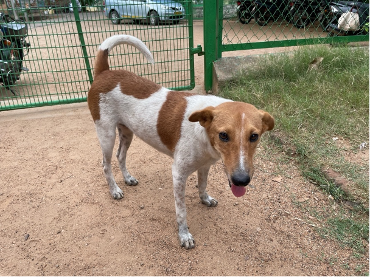
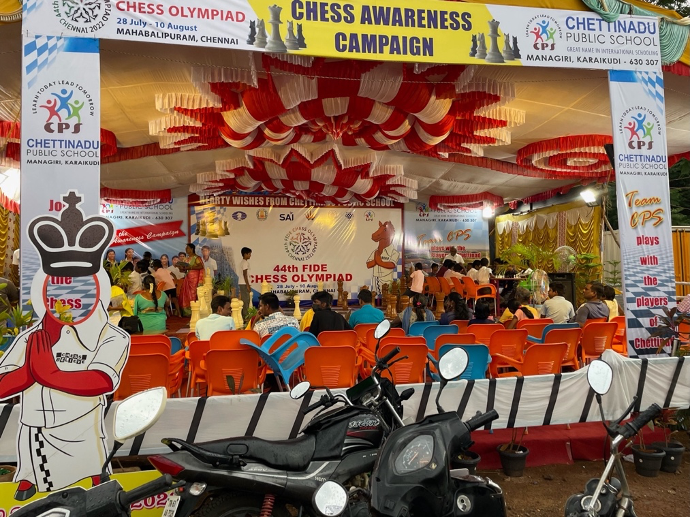

Introduction On Habitats On Conspicuity On Adolescence On Groups On Money On Logicstics On Pockets On Piety Appendix A: Glossary Appendix B: Varanasi Tour Roster Appendix C: Works Cited
I'm hosted with GitHub Pages.
My inability to speak the Tamil language reduced me to a state of adolescence. I could not follow a conversation when the adults were talking. Everything was explained to me post hoc. I would hear the room erupt in laughter, and five seconds later, Muthu would explain to me the nature of the joke: This time, Muthu’s aunt had remarked how silly I looked as I blankly watched a conversation I could not understand. I offered a chuckle to signal that the joke crossed the language barrier. I thought that my trip to India would offer me a chance to exercise my fledgling adulthood. The opposite has been true.
I also asked questions like a child. I pestered Muthu with a near-constant stream of questions: “Who was he?” “What did she just say?” “When is dinner?” “Where are we going?” “Why do you do that ritual?” Muthu answered my questions, translated what I said, and translated what was said to me. Muthu said that translation was one of his favorite things to do. Muthu’s ability to translate grants him access to every conversation. The act of translation is a method of wielding power. It allows the translator to control and censor the conversation. Muthu’s control and censorship were far from malicious, but he still exerted power over the conversation. Muthu was my mouthpiece that filtered every word I spoke and heard. He defined the culture for me and me for the culture. He was the throat of the hourglass through which the sands of Tamil culture flowed to me. I never knew when Muthu was overstating his knowledge and understating his ignorance. As a quasi-ABCD (American-Born Confused Desi) himself, Muthu’s grasp on Tamil culture has been proven to be fraught. While he possesses a formidable layman’s knowledge of Tamil culture, his amma (mother) and appa (father) frequently correct him on the finer nuances of Tamil culture.
To me, spoken Tamil sounded like gibberish, which caused me to wonder what my English gibberish sounded like. Whenever I talked to Muthu in English, I probably sounded like I was a babbling baby to the Tamil person unfamiliar with the English language. Even for those who did speak English, my accent presented an obstacle to understanding me. As Americans, we like to think that our accent is the pure unadulterated form of spoken English, which is simply not the case. While Americans may have the easiest time understanding English spoken with an American accent, in Tamil Nadu, locals have a far easier time understanding English spoken with a Tamil accent. Even though I often spoke the same language as people, we certainly did not speak with the same accent.
When Muthu and I visited Madurai, we spent a few hours scouring the shops for the cheapest watch battery for Muthu’s Timex dress watch. We floated from shop to shop asking the proprietors whether they had the watch battery we were seeking. At one point, Muthu was on the phone with his appa (father), so I decided to ask about watch batteries on his behalf. I went up to the store attendants at the Titan watch shop and asked if they had watch batteries. The employees looked confused—it was clear that they did not understand me. I decided to try a new method: I looked at the store attendants and pronounced “vudch beddery” in the best Tamil accent I could muster. Immediately, the employees understood what I wanted. “Beddery,” they repeated with relief, glad that they understood what I needed. It felt wrong to use an Indian accent—I never liked when Muthu feigned an Indian accent to assimilate. I only used it to make myself easier to understand. By the time I left Tamil Nadu, I had a pretty good grasp of the Tamil accent. If a Tamil spoke English to me, I could understand what they were saying—not without some effort. Repeated exposure to the accent made me familiar with its tone, cadence, and idiosyncrasies. But Tamils still could not understand my American accent since they didn’t hear it spoken as often as I heard the Tamil accent.
When I tried to speak everyday Tamil words like “vannakam” (hello), “ahma” (yes), “ille” (no), “venum” (I want), “venam” (I don’t want), “podhum” (enough), and “nandri” (thank you), Muthu would have to explain to people that I was speaking Tamil. Oddly enough, Muthu said that the problem was not my accent—many Tamils complimented my Tamil accent. The problem was that people would have a hard time registering that I—a foreigner—was speaking Tamil. One time, when I said, “poittu vanga” (“leave and come again”) to a woman at a pooja (ritual) hosted by Muthu’s aaya (grandmother), the woman let out a loud giddy guffaw. It was so strange to her that I, a foreigner, was speaking her language. The joy on her face was reminiscent of the joy on parents’ faces when they hear their child speak their first words.
My attempts to learn the language must have appeared awfully juvenile. Many of the first Tamil words I learned were animal names. As we drove across Tamil Nadu, to practice the language, every time I saw an animal for which I knew the vocabulary word, I would walk up to that animal, gesture, and say the name of the animal—and not without enthusiasm. Our driver, Raja Anna, would chuckle as he heard me exclaim, “maadu!” (“cow!”), “aadu!” (“goat!”), “naai!” (“dog!”), “koli!” (“chicken”), and “vaathu!” (“duck!”). Objects were not exempt from this game—I would repeat the process for words like “veedu!” (“house!”), “marram!” (“tree!”), “vandi!” (“vehicle!”), “perundhu!” (“bus!”), and “kolam!” (“ decorative chalk threshold drawing!”). Shanti Akka, our maid who often traveled with us, would jokingly mimic my childlike expressions and chuckle.
When we visited the Saraswati Temple in Koothanur , vendors selling school supplies flanked the walkway to the temple entrance. Saraswati, after all, is the goddess of knowledge and music in Hinduism. As I surveyed the shops, a small book caught my eye. Colorful icons depicting fruits, animals, and babies filled the white cover. It was a Tamil alphabet book for babies and small children. Like a child who sees an irresistible toy in the aisles of a store, I knew I had to have this book. 20 rupees (25 cents) was a small price to pay for a wealth of knowledge. Despite many plans to attempt to learn the Tamil alphabet, I never used that book.
To many, I was a novelty. In America, if you want to pet a dog (naai in Tamil, though the dogs in Tamil Nadu are not the kind you want to pet), you must first petition its owner. What follows is an assortment of questions for the owner to acquaint yourself with the naai. “Can I pet your naai? Does she bite? What’s her name? What kind of naai is she? How old is she?” In the same way, people would approach Muthu as a prospective naai petter approaches a naai owner: “Can I talk to the vellaikkaran (white man)? What’s his name? Where is he from? Why is he here?” Meanwhile, I would stand idly by wearing a dumb smile and wagging my proverbial tail. There are a few words I used to recognize when people were talking about me. Any mention of “Henry,” “friend,” “America,” “California,” “fellowship,” or “vellaikkaran” (“white man”) indicated that I was the topic of conversation.

Tamil naai (dog)
Even my conversations in English were adolescent. People were eager to practice their English with me. The standard opener was usually a “Hi, how are you?” to which I would reply the equally standard “Good, how are you?” to which they replied “good” with a self-satisfied smile. Some of the more adept English speakers would ask where I was from, to which I would reply “America.” The conversation would usually end there.
My adolescence also manifested itself within Muthu’s family. Uma, Muthu’s amma (mother), told me that throughout the trip, she wanted to treat me no differently than Muthu or Harini (Muthu’s sister). This exceptionally hospitable gesture relegated me to the role of a child once again. Most of the time, I did not even know what our plan for the day was. I did not know where we were going, what we were doing, or with whom we were meeting. I was chauffeured around Tamil Nadu, mostly ignorant of our plans. Often, I would hear Uma discuss plans with Muthu or Meenakshi. Often, the discussion appeared heated. Linguist David Shulman notes that Tamil is one of the fastest spoken languages. Tamil’s pace suggests aggression in the tone of the speakers. Muthu felt the same way in Varanasi, where Hindi was the primary language. He put it best: “I love fast loud aggravated speech in another language spoken by people who control what happens to me.”
My linguistic ineptitude relegated me to the kids’ table, as it were. Harini, Muthu’s soon-to-be-6th-grade sister, was one of my closest friends while in Tamil Nadu. While Muthu was busy, we would play board games, card games, and iPad games. One of the games we played was Klask, a foosball-esque game played using a wooden board, magnetic pawns, a small wooden ball, and circular holes for goals. While playing games was another reflection of my adolescent state, it also equipped me to transcend language barriers.
While we were in India, Tamil Nadu was hosting the 44th Chess Olympiad in Chennai, so there was widespread fervor around chess. One day, as Muthu and I were exploring the town of Karaikudi, we happened upon a large tent at the corner of 100 Feet Road and Mudiyarasan Salai Road. Across the top of the tent in big letters, it read “CHESS AWARENESS CAMPAIGN.” Muthu and I chuckled—were people unaware of chess? Indians, after all, invented chess, so it would be strange if they were unaware of its existence. Thoroughly intrigued, we decided to pay a visit to the enigmatic tent. Upon arrival, the organizers from the Chettinad Public Schools (which is, contrary to what the name may suggest, a private school) greeted us with chai and biscuits and told us that we could play the next available contenders. Now, I don’t mean to brag, but I was one of the founding members of the Eagle Ridge Academy lower school chess club—I even designed the t-shirt. I’ve certainly played a game or two of chess in my day. Elementary school was the height of my chess career, but the sun has long set on that heyday.

“CHESS AWARENESS CAMPAIGN” tent
My opponents were an assortment of Tamil boys from the Chettinad Public Schools decked out in a traditional school uniform—an untucked white Oxford button-down with a breast pocket. As I was seated next to my first competitor, I tried to get a read on him. He was stocky and seemed to be in roughly 6th grade. He had a dumb closed-mouth smile that betrayed his cockiness, which was not unwarranted. As we were setting up the board, I thought to myself, “I bet he thinks that I don’t even know how to correctly set up the board.” The joke was on him because I did know how to correctly set up the board. As we began, it became clear that I was out of my element. I opened with aggressive offensive play but made a few critical errors, which sowed the seeds for my inevitable demise. What followed was a long futile defense of my king that ended in a victory for my opponent. We shook hands and said good game. Now I was 0-1.
My next opponent was slightly older and wore black thick-rimmed glasses, not unlike my own. His smile was slightly coyer and less cocky. I once again opened with aggressive offensive play but made several critical errors. What followed was another drawn-out defense and another tragic checkmate. We shook hands and said good game. Now I was 0-2.
For my third game, I was facing a boy about the age of the first boy. He was stern and seemed a bit less self-assured. I started the game like I always did, attempting the Scholar’s Mate, a checkmate-in-four opener. Pawn to E4, bishop to C4, queen to F3, queen to F7, checkmate! I could not believe it. My four-move checkmate was successful! I had finally outsmarted a kid 7 years my junior. The kid looked awfully disappointed with himself. Basking in cockiness, I asked if my opponent wanted a rematch. He agreed. Unfortunately, that game went like all the rest: aggressive open, critical errors, drawn-out loss. I was now 1-3, a disappointing showing for a former chess club aficionado like myself.
Despite my lackluster showing on the chess boards, I still became a focal point of the event. The presence of a foreigner was a boon for the Chettinad Public Schools organizing team, so they decided to use this rare occurrence to bolster the publicity of their chess awareness campaign. An older man with gray hair and glasses interviewed me about my experience in Karaikudi as three younger men orbited me with cameras.
Whenever people ask about my favorite memory from India, I tell them this story. This experience brought to mind games from my childhood like hide-and-go-seek tag or capture the flag where I was able to behave as though I was an adult by making my own decisions within the simplified realm of the game. Playing games allowed me to simultaneously embrace and transcend my adolescent status. The game of chess was a culture unto itself with its own rules and patterns of behavior. Even though I didn’t speak the same language as the kids from the Chettinad Public School, chess provided a shared medium of communication.